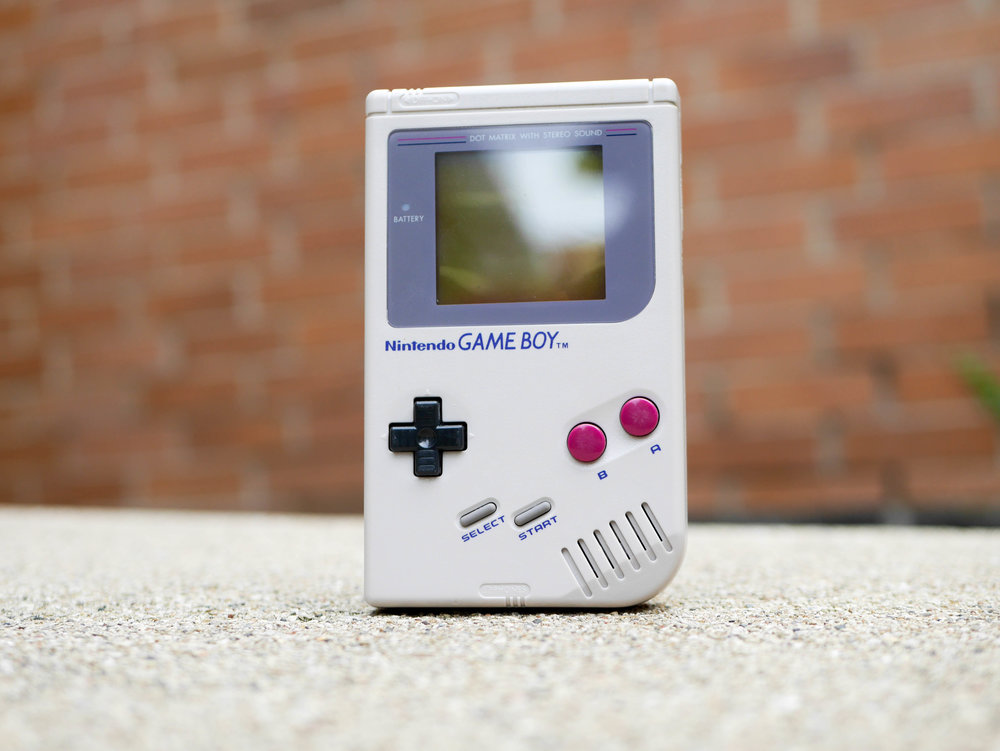

Shop

The original nintendo Dot Matrix Game Boy system. Comes moded with a backlit aftermarket screen.
It also comes with a number of new settings and brightness levels.
A must have for any colector who enjoys mods.